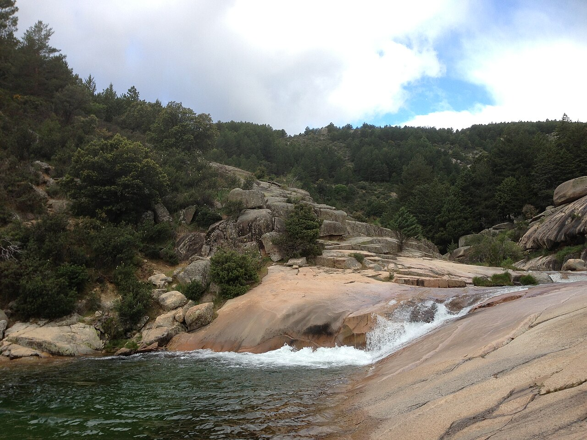

La Pedriza (Manzanares el Real)
La Pedriza, en Manzanares el Real, es uno de los rincones más espectaculares de la Sierra de Guadarrama: un mar de rocas graníticas modeladas por la erosión por donde serpentea el río Manzanares. Es un destino habitual para el senderismo y la escalada, con rutas como el circuito del Canto Cochino y la Charca Verde (unos 11,7 km, dificultad moderada), pozas de agua cristalina y vistas abiertas de la sierra.
